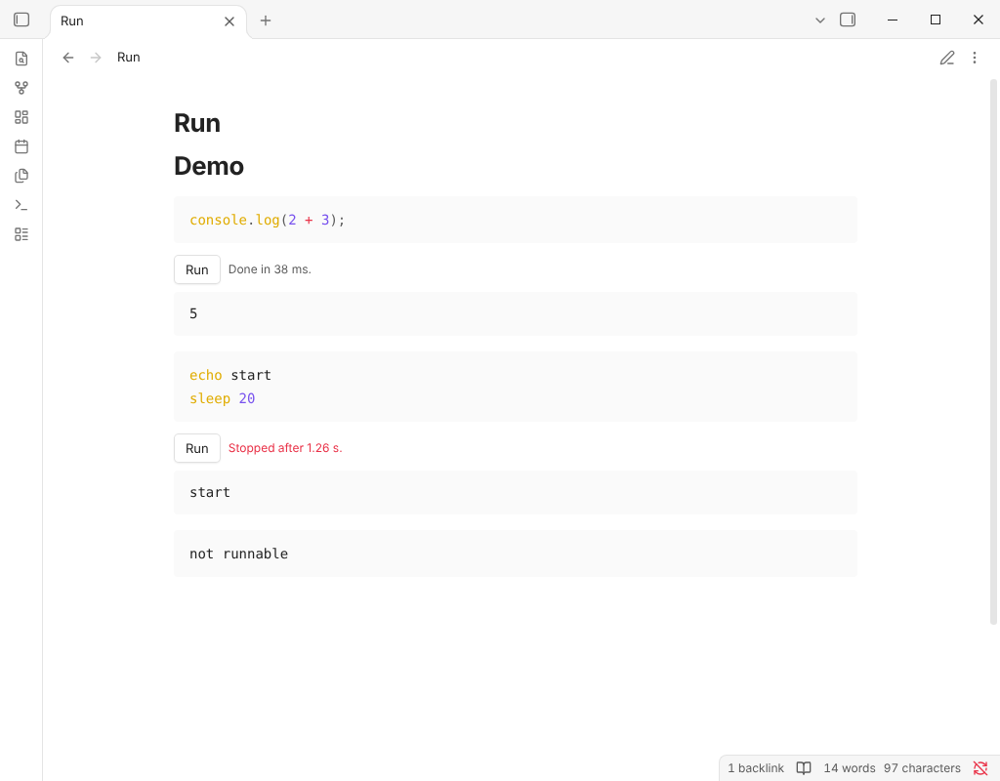

Free Obsidian plugin
Run Code Blocks
Adds a Run button to code blocks and shows the output right below, for JavaScript, Python, shell and more.
Install from the Obsidian directory Open in Obsidian Source code and issues

What it does
Adds a Run button to code blocks and shows the output right below, for JavaScript, Python, shell and more.
Highlights
- Output as it happens. Text appears while the program runs, and the same button turns into Stop.
- Stop really stops. It ends the script and anything the script started, so a forgotten
sleepor server does not keep running. - A time limit and an output limit. Runs end after 30 seconds by default, and very long output is cut with a note saying how much was dropped.
- Your own tools. Each language uses the program you already have, and you can point it at a full path or add flags, such as
python3 -u. - Asks once. Code runs with your own permissions, so the first Run explains that and waits for a yes.
Details
- Version
- 0.1.0
- Needs Obsidian
- 0.16.0 or newer
- Platforms
- Desktop
- Author
- Siulved54
- Price
- Free and open source